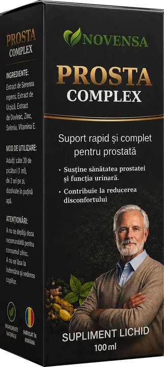

Știai că?
1 din 2
bărbați peste 50 de ani
au
prostata mărită.
Semnele apar treptat. Cele mai frecvente:
1
Te trezești noaptea să urinezi
2
Jet slab sau întrerupt
3
Senzația că vezica nu se golește
4
Urinări dese în timpul zilei

Dacă ai aceste semne, discută cu medicul urolog. Supliment alimentar.
✓ Ingrediente naturale
✓ Fabricat în România
✓ Plata la livrare